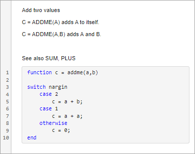
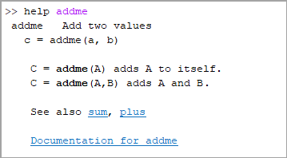
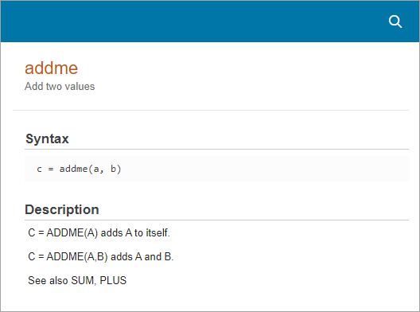
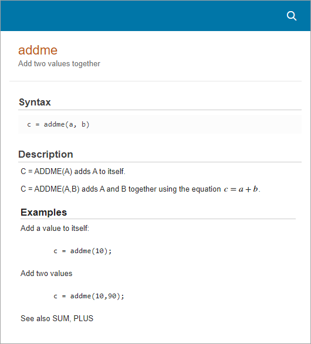

Add Help for Live Functions
You can provide help for the live functions you write. Help text appears in the
Command Window when you use the help command. You also can use the
doc command to display the help text in a separate
browser.
Add Help Text
To create help text, add text at the beginning of the file, immediately before the
function definition line (the line with the function
keyword).
For example, create a live function named
addme.mlx.
function c = addme(a,b) switch nargin case 2 c = a + b; case 1 c = a + a; otherwise c = 0; end
Add two values C = ADDME(A) adds A to itself. C = ADDME(A,B) adds A and B.
To add "See also" links, at the end of the help text, add a blank text line and
then add a line that begins with the words See also followed by a
list of function names.
See also SUM, PLUS
If the functions exist on the search path or in the current folder, the
help command displays each of these function names as a
hyperlink to its help text. Otherwise, help prints the function
names as they appear in the help text. A blank line must precede the line containing
the See also text for the links to display correctly.

When multiple files or functions have the
same name, the help command determines which help text to display
by applying the rules described in Function Precedence Order. However,
if a file has the same name as a built-in function, the Help on
Selection option in context menus displays the documentation for
the built-in function.
You also can add help to live functions by inserting comments at the beginning of
the file. Comments at the beginning of the file appear as help text when you use the
help and doc commands, similar to how
text at the beginning of the file appears. For more information about adding help
using comments, see Add Help for Your Program.
View Help Text
Type help addme in the Command Window. The help text for the
addme function appears in the Command Window, starting with
name of the function, followed by the first line of help text (often called the H1
line). Then, MATLAB® displays the syntax of the function. Finally, MATLAB displays any remaining help text.

Type doc addme to view the formatted help text in a separate
window.

Add Formatted Text and Examples
To enhance the documentation displayed when you use the doc
command, you can format the help text and add hyperlinks, images, videos, equations,
and code examples. To format the help text, go to the Live
Editor tab and select from the options in the
Text section. To insert hyperlinks, images, videos,
equations, and code examples, go to the Insert tab and select
from the available options.
For example, in the addme function, add an equation to the
second syntax description and create a section for examples by adding a header and
two MATLAB code examples before the "See Also" links.
In the
addmefunction, position your cursor at the end of the second syntax description, go to the Insert tab, and select Equation. Enter the equationc = a + band press Esc.With your cursor on a blank text line before the "See Also" links, go to the Live Editor tab and select the Heading 1 text style. Type the word
Examples.Go to the Insert tab and select Code Example > MATLAB. Enter example code in the block that appears.
For more information about formatting files in the Live Editor, see Format Text in the Live Editor.

See Also
Topics
- Create Live Functions
- Format Text in the Live Editor
- Create Runnable Examples Using the Live Editor
- Ways to Share and Export Live Scripts and Functions